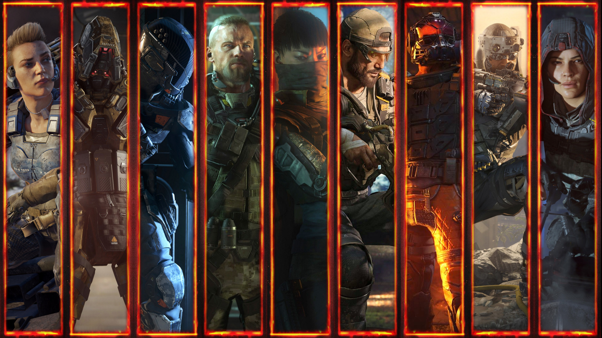

Call of Duty: Black Ops III is een first-person shooter video game ontwikkeld door Treyarch voor de Xbox One, PlayStation 4 en Windows en Beenox en Mercenary technologie voor de Xbox 360 en PlayStation 3. Het werd aangekondigd op 5 februari 2015 en officieel benoemd op 9 april van hetzelfde jaar. De officiële, volledige gameplay onthullen werd getoond op 26 april 2015, [1] en het spel werd officieel uitgebracht op 6 november. Black Ops III is de twaalfde game in de Call of Duty franchise en Treyarch 's eerste te worden ontwikkeld in een driejarige cyclus van de ontwikkeling.
Het is de vierde en laatste game in de Black Ops -serie, volgende Call of Duty: World at War , Call of Duty: Black Ops en Call of Duty: Black Ops II .
Het is de eerste Call of Duty spel waarvoor downloadbare content, met inbegrip van Beta Access, is op PlayStation consoles voor het eerst beschikbaar. De Beta werd uitgebracht voor de PlayStation 4 op 19 augustus, en eindigde op 23 augustus. De Xbox One en PC Beta-versie werd uitgebracht op 25 augustus en eindigde op 30 augustus.
